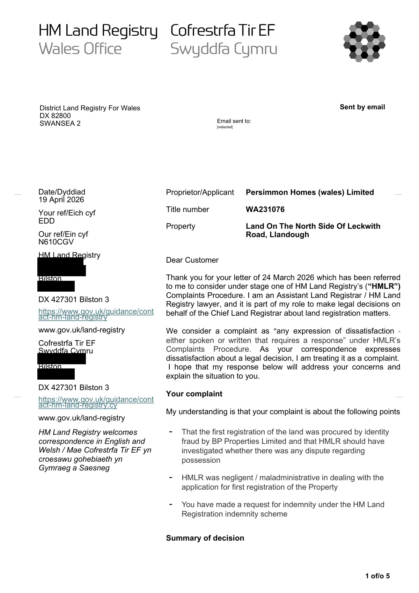

GHF-E106-R93-A1 correspondence (no disclosure)
Stage one complaint decision

Transcript
1 of/o 5 Sent by email Date/Dyddiad 19 April 2026 Your ref/Eich cyf EDD Our ref/Ein cyf N610CGV HM Land Registry [address redacted] Bilston [address redacted] DX 427301 Bilston 3 https://www.gov.uk/guidance/cont act-hm-land-registry www.gov.uk/land-registry Cofrestrfa Tir EF Swyddfa Cymru [address redacted] Bilston [address redacted] DX 427301 Bilston 3 https://www.gov.uk/guidance/cont act-hm-land-registry.cy www.gov.uk/land-registry HM Land Registry welcomes correspondence in English and Welsh / Mae Cofrestrfa Tir EF yn croesawu gohebiaeth yn Gymraeg a Saesneg Proprietor/Applicant Persimmon Homes (wales) Limited Title number WA231076 Property Land On The North Side Of Leckwith Road, Llandough Dear Customer Thank you for your letter of 24 March 2026 which has been referred to me to consider under stage one of HM Land Registry’s (“HMLR”) Complaints Procedure. I am an Assistant Land Registrar / HM Land Registry lawyer, and it is part of my role to make legal decisions on behalf of the Chief Land Registrar about land registration matters. We consider a complaint as “any expression of dissatisfaction -
Read more
either spoken or written that requires a response” under HMLR’s Complaints Procedure. As your correspondence expresses dissatisfaction about a legal decision, I am treating it as a complaint. I hope that my response below will address your concerns and explain the situation to you. Your complaint My understanding is that your complaint is about the following points - That the first registration of the land was procured by identity misconduct by BP Properties Limited and that HMLR should have investigated whether there was any dispute regarding possession - HMLR was negligent / maladministrative in dealing with the application for first registration of the Property - You have made a request for indemnity under the HM Land Registration indemnity scheme Summary of decision District Land Registry For Wales DX 82800 SWANSEA 2 Email sent to: __ __ __ __ [redacted] 2 of/o 5 I have concluded my investigation of your complaint under stage one of HMLR’s Complaints Procedure, and my decision is to not uphold (this means that I have decided that HMLR has acted correctly in accordance with the law and our policy and procedures) your complaint. I have set out my full response to your complaint below. HMLR operates a two stage internal complaints procedure, and this letter represents our first stage response. Further information about our complaints procedure can be found here: www.gov.uk/government/organisations/land- registry/about/complaints-procedure HMLR’s role It may help you to understand our role and what we are able to do to help our customers with the applications they make. HMLR is a government department responsible for registering the ownership of land and property in England and Wales. Our legal duties and powers are set out in the Land Registration Act 2002 (“the Act”) and the Land Registration Rules 2003 (as amended) (“the Rules”). Previous relevant acts included the Land Registration Act 1925. Our basic role is to keep a register of interests in property, so that the public have easy access to reliable information about land ownership and interests in land. Because HMLR is an administrative agency rather than a court or tribunal, we do not have the legal power to make or enforce a decision in the same way as a court or tribunal can nor do we have any investigative powers. Background / History In unregistered conveyancing, title is ultimately based on the estate owner’s right to be in possession of the land or to receive the rents and profits of it. Showing a full documentary title commencing with a good root of title that is at least 15 years old should normally establish this right and is sufficient for land registration purposes. The registration history of the Property has been set out by my colleague Ms Smith in her letter of 23 March 2026. To expand on that, the application for first registration for the land comprised in title WA231076 was made on 30 November 1982. The list of deeds and documents of title lodged in support of the application are listed in the form ‘DL (‘document list’). Our files show an abstract of title listed dated 1971 was lodged with the application for first registration. This is effectively a summary of deeds, documents and events which show a person’s title to unregistered land. It may be written in legal shorthand 3 of/o 5 The deed which conveyed the Property to the applicant for first registration was a conveyance dated 19 November 1982 made between (1) The British Petroleum Pension Trust (2) BP Trustees Limited and (3) BP Properties Limited. The recitals clause (preamble) to that Conveyance states ‘The Vendors are seised in fee simple in the premises described in the First Schedule hereto (hereinafter called “the premises”) upon the Trusts referred to in a Conveyance dated 31 December 1969 and made between Western Ground Rents Limited of the one part and the Vendors of the other part..’ It is clear therefore that the applicant (BP Properties Limited) could show a good root of title and that The British Petroleum Pension Trust acquired the land in 1969. As to the land comprised in WA240304, the application for first registration was made on 23 February 1983 and the applicant was again BP Properties Limited. A request was made to amalgamate the two titles together. The deed which conveyed the Property to the applicant was a conveyance dated 23 May 1975 made between (1) The British Petroleum Pension Trust Limited (2) BP Trustees Limited and (3) BP Properties Limited. The recitals clause to that Conveyance states ‘The Vendors are seised in fee simple upon the trusts referred to in a conveyance dated the thirty first day of December One thousand One hundred and sixty nine and made between Western Ground Rents Limited of the one part and the vendors of the other part.’ Again, our files indicate that we had sight of a copy of a 1971 abstract of title. Consideration and analysis Historic dispute / identity misconduct HM Land Registry is required to check each application includes the information required under the relevant law applicable at the time an application is lodged, and that there are no obvious gaps or inconsistencies in an application. We are not, however, required to make enquiries to ensure that each title includes a comprehensive list of all interests and rights affecting a particular piece of land. Our role is to respond to the applications we receive, rather than to be pro-active in establishing what rights and interest may exist. HM Land Registry application form FR1 contains certain certificates by the solicitors acting for the applicants. These include: “We are not aware of any question or doubt affecting the title to the land or any part thereof, or of any matter or thing whereby the title is or may be impeached, affected or called into question in any matter whatsoever’. HM Land Registry is entitled to rely on those certificates when examining deeds lodged and granting title to land. You have provided a detailed timeline regarding the possession of the property by your relatives. It appears the basis of your claim is that there had been a long running dispute and historic adverse possession of the Property which had the result of extinguishing the documentary title such that the registration of the title created a 4 of/o 5 mistake in the register. As you reference in the timeline, the Court of Appeal heard the dispute relating to the claim of adverse possession in the case of BP Properties Limited v Buckler [1987] EWCA Civ 2] which found that an offer to remain on the land made by the landowner constituted permission and that from that point it was occupied under a licence such that possession was no longer adverse. It did not matter that the offer was never accepted. As explained above, HM Land Registry has an administrative function and it is not for the Registrar to look behind or challenge decisions of the Court. Your asserts relating to ‘identify misconduct’ relating to how your grandmother was addressed by the documentary title holder are not relevant to the issue of title to the land. They relate to the dispute which was heard by the Court. It is clear that you disagree with the findings of the Court but the appropriate forum for any challenge is the judicial system and not HM Land Registry. Negligence / Maladministration of HM Land Registry Having reviewed our records held in relation to the applications made for first registration of the Property, I am satisfied that the registered proprietor evidenced a good documentary title to the land. Our practice and procedures were correctly followed and there is no evidence of negligence or maladministration on the part of HM Land Registry. Indemnity The registrar has the power to make alterations for the purpose of: (a) correcting a mistake; (b) bringing the register up to date; (c) giving effect to any estate, right or interest excepted from the effect of registration; or (d) removing a superfluous entry. None of the above would apply in this case. There is no evidence of a mistake in the register. HMLR can make payments in accordance with the statutory indemnity scheme, as detailed under Schedule 8 of the Act, to anyone who suffers loss because of: • A mistake (error) in the register that could have been rectified (corrected) but was not; or • A mistake in the register before it was rectified. As there is no evidence of a mistake in the register, there is no right to make a claim under the indemnity scheme. 5 of/o 5 My decision For the reasons set out above, my decision is to not uphold your complaint. If you wish to obtain official copies of any documentation you will need to apply for these. Please see HM Land Registry Practice Guide 11 for further information. You may also find the provisions of HM Land Registry Practice Guide 39 of assistance. If you are not satisfied I hope that my response has clarified HM Land Registry’s position in relation to your complaint. If you remain dissatisfied, you may wish to progress your complaint to the next stage of our Complaints Procedure. If you want to begin stage two of our Complaints Procedure, please reply to this letter telling us why you are unhappy with my response and provide the following information: • Identify the particular decision(s) you consider to be incorrect. • Explain why you think that my decision was incorrect. For example, if it is because of my account of the facts, please say which facts; if it is because of my understanding of the law, please say what part of the law. • Set out what you think would be the correct decision. Your complaint will then be reviewed by a Land Registrar (Senior Officer), and you will be contacted within 20 working days. If you require this correspondence in an alternative format please contact us, quoting our reference. Yours faithfully, Charlotte Takeuchi Assistant Land Registrar / HM Land Registry
Artifact description
Automated notification forwarding a further official PDF letter concerning the title.
| Catalogue ID | GHF-E106-R93-A1 |
|---|---|
| What it is | PDF document from HM Land Registry. Attached to an email received on 19 April 2026, their reference WA231076/A/216/CT. 5 pages. |
| From | HM Land Registry |
| Email received | 19 April 2026 |
| Their reference | WA231076/A/216/CT |
| Pages | 5 |
| File | Correspondence.pdf (311 KB) |
| State | Read |
Our integration
Part of the records enquiry thread with HM Land Registry opened 19 April 2026. The thread's standing classification is “correspondence (no disclosure)”.
Concern to test: whether this reply answers the question as asked, or a narrower one. Not checked against the original request wording here.
What cuts against the case: the body disclosed material, which is the opposite of a refusal; what it disclosed is shown here as sent.
Related: The covering email · Timeline · Disclosure Dartboard